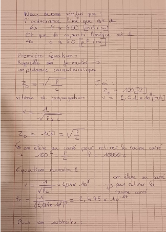
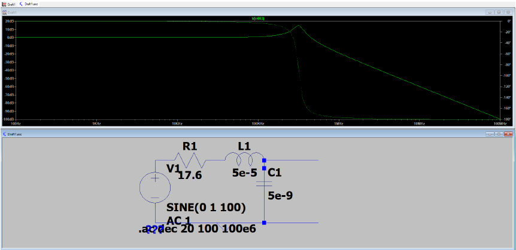
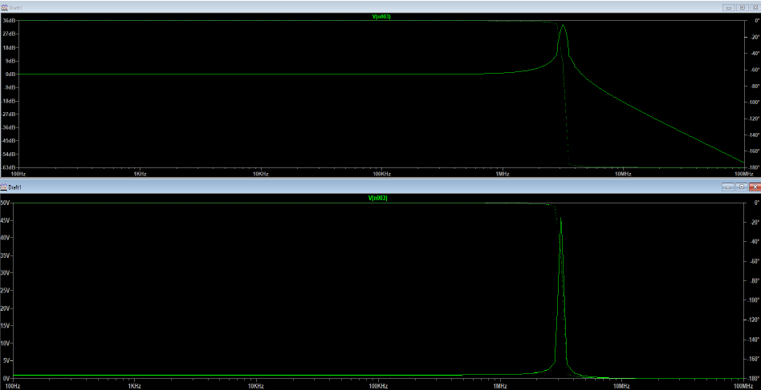
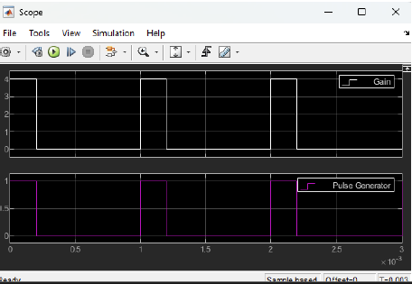
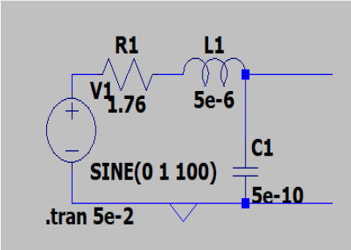
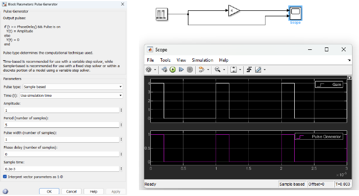

Dans le cadre de cette SAE, j'ai découvert comment caractériser un système de transmission physique, en me concentrant sur deux paramètres fondamentaux : l'atténuation et le retard. Le projet s'est articulé autour de trois approches complémentaires — théorique, par simulation et par mesure directe. J'ai principalement travaillé sur la simulation de câbles ethernet et coaxiaux à l'aide des logiciels LTspice et Simulink, en modélisant des circuits RLC représentatifs de ces lignes de transmission et en analysant leur comportement fréquentiel.




La partie théorique m'a permis de retrouver les formules de l'impédance caractéristique et de la vitesse de propagation à partir des paramètres linéiques L et C du câble. Sous LTspice, j'ai simulé un circuit RLC modélisant une ligne de transmission et observé la réponse en fréquence : le signal reste stable sur une large plage avant d'être fortement atténué au-delà de la fréquence de coupure. Avec Simulink, j'ai ensuite simulé le comportement d'un signal créneau traversant ce même type de ligne, en observant l'effet du gain appliqué sur le signal en sortie via un oscilloscope virtuel.


Au terme de cette SAE, j'ai acquis une vraie compréhension du comportement électrique des câbles de transmission. Savoir modéliser une ligne physique, paramétrer correctement un logiciel de simulation et interpréter les courbes obtenues sont des compétences directement utiles dans le métier de technicien R&T, notamment pour diagnostiquer des problèmes de liaison ou valider une installation réseau avant déploiement.